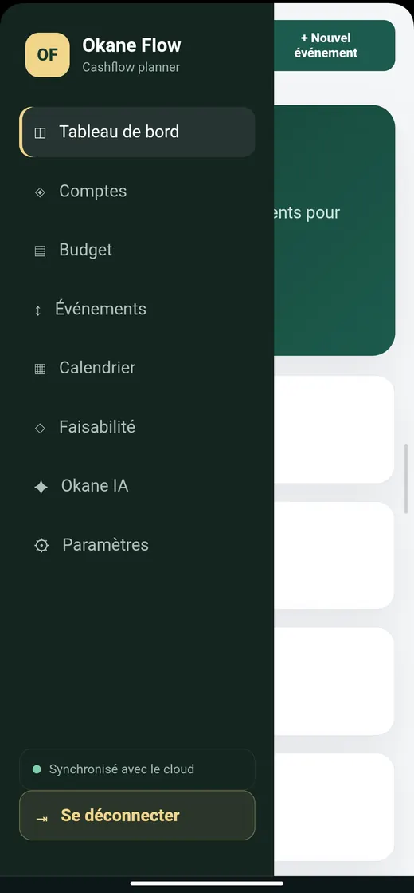

Okane
Application de suivi des finances personnelles et d'étude de faisabilité d'un projet.
- Fonctionnalités
- Tableau de bord, comptes, budget, événements, calendrier, module de faisabilité, assistant IA et synchronisation des données.
- Mon rôle
- Conception de l'application.
- État
- En développement